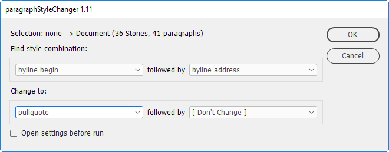
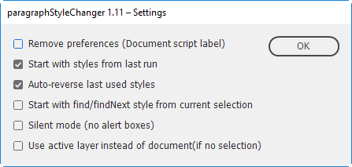

Paragraph style changer
Author: Stephan Möbius. Version 1.11. The source is here.
Description
Use this script to comfortably find and replace applied paragraph styles, especially conditional combinations(!) of paragraph styles in quite a variety of selections. I (Stephan Möbius) use it in early design phase to test different typographical layouts.
Examples
- In selected text change each paragraph style that's "P1" to "P2" (quicker than using indesigns find/change)
- In the stories of the selected textframes change each "Headline1" followed by "Subhead1" to "Headline2" followed by "Subhead 2". Quickly revert this by running the script again with the "autoReverseLastStyles" option.
Notes
Original script for starting point was: "Fix paragraph style combinations" by Thomas Silkjær, 2009.
The script will display the selection it applies to:
- the active document (if nothing is selected)
- the active layer (if nothing is selected, settings option)
- the story if an insertion point or text frame is selected
- the stories of texts on paths (of text frames, lines, rectangle, polygons....)
- the stories of multiple selected items, like text frames, groups, or groups of groups (recursive)
- the paragraphs of selected text
- the paragraphs of selected cells or a selected table (select the table, not the container!)
(To clarify: it will _NOT_ do the pragraphs of a single text frame from a story, but do the complete linked parent story. If you only want to change a portion select the column or some paragraphs instead.)
Important notes
Local character overrides, i.e text style ranges are kept, but overrides of paragraph styles are lost when you apply new paragraph styles — just as is always the case in inDesign by default. The script makes no effort to back up your overrides, when it applies styles.
You will not be able to create alternating patterns of paragraph styles from uniformity, i.e in texts that had no alternating pattern to begin with.
A nasty use case you should understand is this: Imagine "If -this- paragraph's style is [A] followed by [-ANY-Style-] THEN change this paragraph to [X] AND its next paragraph to [Y]." ... This would result in paragraphs to be changed twice — for example underway in A A A B --> X Y Y Y. The script prevents paragraphs beeing changed twice by prefering to change _consecutive_ paragraphs and ignoring the other match. Hence the result may not seem logical. That's when the report says it had more matches than changes.
ParagraphStyleChanger won't find nor change blank line last paragraphs. To my knowledge and level of understanding, "blank line" end paragraphs at the end of a story consisting of a single carriage return DO NOT COUNT as a valid paragraph. Note that they won't count as 'ANY STYLE' ! This is irritating since in InDesign you're able to place your cursor in it and give it a paragraph style ... but in scripts we can't work with them.
Beware: Styles from preferences that are listed as [-NOT FOUND-] (i.e. styles that have been renamed, moved to another group or deleted since last run) are treated logically like [-ANY STYLE-].
About settings: The order in which the dropdowns get loaded are: FIRST load last used styles (if so set). THEN Auto-reverse styles (if so set) AT LAST insert retrieved current selections styles into -Find/Next- dropddowns (if so set). The result can be confusing if you use a mix of these settings.
Using the "remove settings" option will delete the script label from the document and it will open with default preferences next time.


Click here to download the script.